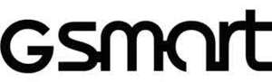

Trade Mark Journal No.2026/012 20 March 2026
UK00004339826 12 February 2026 (9)

- Class 9
- Electronic whiteboards; Electronic interactive whiteboards; Self-motion advertising machine; Thermal copier; Liquid crystal display; Monitors [computer hardware]; Computer touch screen; Computer keyboards; Computer memory; Computer memory devices; Computer host; Computer mouse; Mouse [computer peripheral]; Hard disk; Solid-state drive; Solid-state disk [SSD]; Hard drives for computers; Microprocessors; Disk drives for computers; USB flash drives; Hard disk drive [HDD]; Readers [data processing equipment]; Computers; Wearable computers; Notebook computers; Handheld computer; Portable computer; Laptop computers; RAM module; RAM; Cell phone application; Mobile phone application; Computer programs, downloadable; Applications programs, downloadable; Computer software; Computer software applications, downloadable; ; Computer software, downloadable; Flash memory; Computer workstation; Personal computer; Tablet computers; ; Graphics processing unit [GPU] ; Home automation hubs; Smart home hubs; Network card; Computer main board; Graphics accelerator; Graphic card; Video card; Computer memory card; Card reader; Electronic book readers; Computer tablet; Mouse pads; Palm rest for keyboard; Wrist rests for use with computers; Portable flash memory; Electronic shelf labels; Stands adapted for laptops; Carry bag for portable computer; Carry bag for notebook computer; Carry bag for tablet computer; Bags adapted for laptops; Sleeves for laptops; Covers for tablet computers; Television; TV cabinet; TV screen; TV touch screen; Television apparatus; Record players; Headphones; Headsets; Canalphones; Virtual reality headsets; Wireless headphones; Bluetooth headset; Earpieces for remote communication; Headsets for playing video games; Speaker; Cabinets for loudspeakers; Bluetooth speaker; Horns for loudspeakers; Loudspeaker; Wearable speakers; Thin film speakers; Portable speakers; 3D image receiving glasses; Computer speaker; Smart speaker; Computer cable; Data transmission cable; Video conference device; Chips [integrated circuits]; Semiconductor chip; Main board; Electric power supply units; Switching power supply apparatus; Electronic power supplies; AC/DC power supplies; Cooling pads for laptop computers; Humanoid robot; Entertainment robot; Humanoid robots with artificial intelligence for use in scientific research; Laboratory robots; Teaching robots; Security surveillance robots; Telepresence robots; Robotic arm for entertainment; Humanoid robots having communication and learning functions for assisting and entertaining people; Humanoid robots with artificial intelligence for use in household cleaning and laundry; Smart glasses; Smartwatches; Connected bracelets [measuring instruments]; Wearable activity trackers; Wearable electronic devices; Virtual reality glasses; Smart rings; Augmented reality glasses.
BYTE International Co., Ltd.
Representative: CAM Trade Marks & IP Services